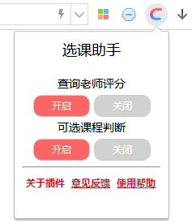
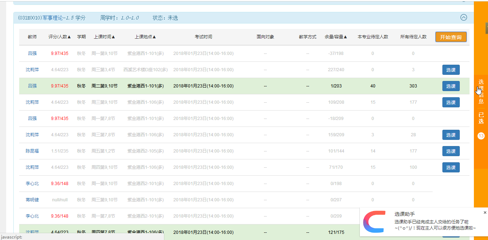

//***************************************阿狸选课**使用说明********************************************//
意见反馈通道：1017417552@qq.com，此帮助页面只显示一次，请在使用前务必仔细阅读，其后仍可通过点击浏览器扩展工具栏的小阿狸选课图标调出。
1.这个插件有什么功能？
此插件为浙江大学教务系统选课助手，可查看老师在ZJU学习帝上的评分，并通过优化算法查询课程余量及上课时间冲突情况，方便选课。
具体功能如下：
设置菜单：可点击浏览器扩展工具栏的图标调出

如果发现插件某项功能不正常，请检查此设置菜单是否全部开启。
插件目前对于选课页面有效，绿色表示可选课程：
进入详情选课界面后，插件开始自动查询，右下角和浏览器标题栏会提示当前状态信息，时间冲突课程将以灰色标注，余量为0的课程其复选框将消失，同时，可选课程将以绿色标注：

2.我安装了插件，怎么一点反应都没有呀？
答：检查浏览器地址栏最右端的浏览模式（某些浏览器如猎豹浏览器请尝试在网页上单击鼠标右键，选择“切换到极速模式”），插件不能在有E字样的兼容模式中使用。建议换成“极速模式”。若还不能正常使用，请尝试升级浏览器至最新官方版本，清除缓存。若仍未能正常使用，请联系作者。


3.为什么提示“身份验证超时”？
答：因为本插件使用的身份验证为学号验证，数据所在的服务器响应时间较长，等待一会儿再试试应该可以的，如果多次尝试仍然提示超时请联系插件作者。
4.为什么提示“还在内测阶段”？
答：由于选课任务的重要性，目前此插件只在小范围内试用，如要使用请联系作者开通权限。
5.插件怎么安装？
答：请自行百度相应浏览器的插件安装教程，若确实无法安装请联系插件开发者。建议不要使用谷歌chrome浏览器，因为谷歌对于插件有较严格的安全限制，未进入谷歌应用商店的插件无法安装。但由于众所周知的原因，国内访问谷歌不便，故请尽量使用下面列出的其他浏览器。
6.插件支持哪些浏览器？
答：目前来说支持以chromium为内核的浏览器
完美支持插件的浏览器(最新版)有: \(^o^)/
1）Google Chrome
2）Chromium
3）360极速浏览器
4）枫树极速浏览器
5）360安全浏览器
6）百度浏览器
7）QQ浏览器
8）猎豹浏览器
常见不支持的浏览器(有自己专用的扩展格式): ╮(╯_╰)╭
1）Firefox
2）Safari
3）遨游浏览器
4）Internet Explorer(6、7、8、9、10、11...)
其他浏览器请自行尝试。